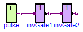
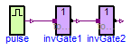

Simple series connection of two FMUs with envolved enumerations from the Modelica.Electrical.Digital library that are propagated and are time/value transformed
Information
Extends from Modelica.Icons.ExamplesPackage (Icon for packages containing runnable examples).
Package Content
| Name |
Description |
 Reference Reference
|
Reference solution in pure Modelica |
| WithFMUsReference
|
Reference solution in pure Modelica using exactly the same structuring as in Model WithFMUs |
| WithFMUs
|
Solution with FMUs |
 FMUModels FMUModels
|
For all models in this package an FMU must be generated |
Reference solution in pure Modelica

Information
Extends from Modelica.Icons.Example (Icon for runnable examples).
Modelica definition
model Reference
"Reference solution in pure Modelica"
extends Modelica.Icons.Example;
Modelica.Electrical.Digital.Sources.Pulse pulse(
width=40,
period=0.5,
startTime=0.1,
pulse=Modelica.Electrical.Digital.Interfaces.Logic.'1',
quiet=Modelica.Electrical.Digital.Interfaces.Logic.'0',
nperiod=-1);
Modelica.Electrical.Digital.Gates.InvGate invGate1(
tLH=0.1,
tHL=0.1,
G2(y(start=invGate1.y0,fixed=true)));
Modelica.Electrical.Digital.Gates.InvGate invGate2(
tLH=0.1,
tHL=0.1,
G2(y(start=invGate2.y0,fixed=true)));
equation
connect(pulse.y, invGate1.x);
connect(invGate1.y, invGate2.x);
end Reference;
Reference solution in pure Modelica using exactly the same structuring as in Model WithFMUs

Information
Extends from Modelica.Icons.Example (Icon for runnable examples).
Modelica definition
model WithFMUsReference
"Reference solution in pure Modelica using exactly the same structuring as in Model WithFMUs"
extends Modelica.Icons.Example;
Modelica.Electrical.Digital.Sources.Pulse pulse(
width=40,
period=0.5,
startTime=0.1,
pulse=Modelica.Electrical.Digital.Interfaces.Logic.'1',
quiet=Modelica.Electrical.Digital.Interfaces.Logic.'0',
nperiod=-1);
FMUModels.InvGate1 invGate1;
FMUModels.InvGate2 invGate2;
equation
connect(pulse.y, invGate1.x);
connect(invGate1.y, invGate2.x);
end WithFMUsReference;
Solution with FMUs
Information
Extends from Modelica.Icons.Example (Icon for runnable examples).
Modelica definition
Automatically generated Fri Apr 25 16:22:59 2014.
 FMITest.SimpleConnections.SeriesWithEnumerations2.Reference
FMITest.SimpleConnections.SeriesWithEnumerations2.Reference